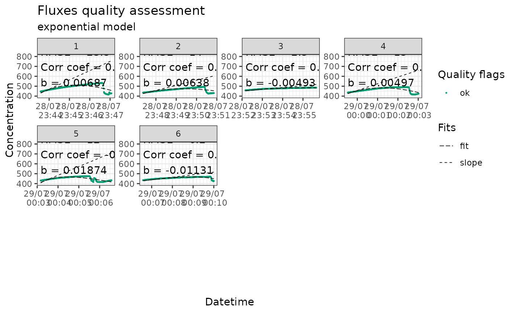
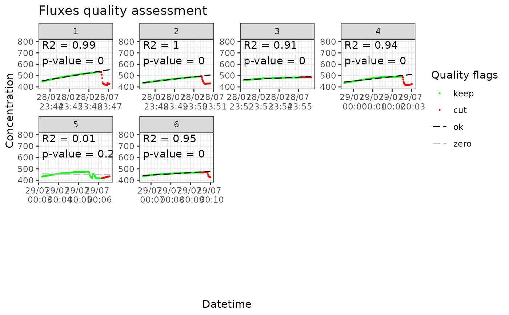
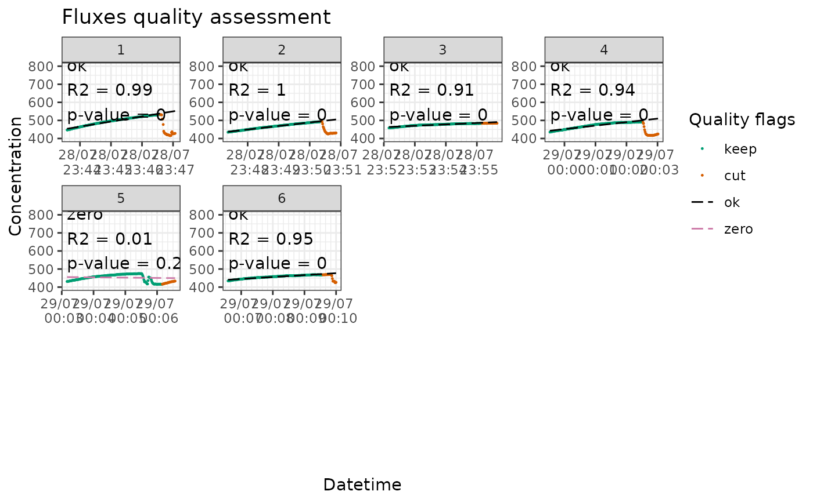
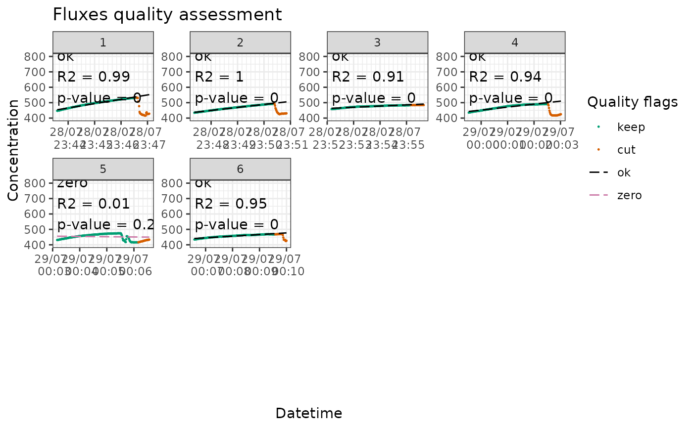

ploting fluxes for fit evaluation
flux_plot.Rdplots the fluxes and indicates what should be discarded or replaced by zero
Usage
flux_plot(
slopes_df,
fit_type,
datetime_col = "f_datetime",
conc_col = "f_conc",
cut_col = "f_cut",
fit_col = "f_fit",
fit_slope_col = "f_fit_slope",
quality_flag_col = "f_quality_flag",
fluxID_col = "f_fluxID",
pvalue_col = "f_pvalue",
rsquared_col = "f_rsquared",
start_col = "f_start",
b_col = "f_b",
cor_coef_col = "f_cor_coef",
RMSE_col = "f_RMSE",
color_discard = "#D55E00",
color_cut = "#D55E00",
color_keep = "#009E73",
color_ok = "#000000",
color_zero = "#CC79A7",
f_date_breaks = "1 min",
f_minor_breaks = "10 sec",
f_date_labels = "%e/%m \n %H:%M",
f_ylim_upper = 800,
f_ylim_lower = 400,
f_scales = "free",
f_plotname = "plot_quality",
f_ncol = 4,
f_nrow = 3,
y_text_position = 500,
f_nudge_y = 100,
print_plot = "FALSE",
output = "pdfpages",
device = NULL,
path = NULL,
scale = 1,
width = NA,
height = NA,
units = c("in", "cm", "mm", "px"),
dpi = 300,
limitsize = TRUE,
bg = NULL,
create.dir = FALSE
)Arguments
- slopes_df
dataset containing slopes
- fit_type
model used in flux_fitting, exponential or linear
- datetime_col
column containing datetime of each concentration measurement
- conc_col
column containing gas concentration data
- cut_col
column containing cut factor from the flux_fitting function ("cut" or "keep")
- fit_col
column containing the modelled fit of the flux
- fit_slope_col
column containing the modelled slope at tz
- quality_flag_col
column containing the flags produced by flux_quality
- fluxID_col
column containing unique IDs for each flux
- pvalue_col
column containing the p-value of each flux
- rsquared_col
column containing the r squared to be used for the quality assessment
- start_col
column containing the datetime of the start of each flux
- b_col
column containing the b parameter of the exponential fit
- cor_coef_col
column containing the correlation coefficient produced by flux_quality
- RMSE_col
column containing the RMSE produced by flux_quality
- color_discard
color for fits with a discard quality flag
- color_cut
color for the part of the flux that is cut
- color_keep
color for the part of the flux that is kept
- color_ok
color for fits with an ok quality flag
- color_zero
color for fits with a zero quality flag
- f_date_breaks
date_breaks argument for scale_x_datetime
- f_minor_breaks
minor breaks argument for scale_x_datetime
- f_date_labels
date_labels argument for scale_x_datetime
- f_ylim_upper
y axis upper limit
- f_ylim_lower
y axis lower limit
- f_scales
argument for scales in facet_wrap ("fixed" or "free")
- f_plotname
filename for the extracted pdf file
- f_ncol
ncol argument for facet_wrap
- f_nrow
number of row per page in extracted pdf file
- y_text_position
position of the text box
- f_nudge_y
to nudge the text box with the parameters above the modelled flux
- print_plot
FALSE or TRUE, if TRUE it prints the plot in R but will take time depending on the size of the dataset
- output
if "pdfpages", the plots are saved as A4 landscape pdf pages (default); if "ggsave", the plots can be saved with the ggsave function
- device
see ggsave()
- path
see ggsave()
- scale
see ggsave()
- width
see ggsave()
- height
see ggsave()
- units
see ggsave()
- dpi
see ggsave()
- limitsize
see ggsave()
- bg
see ggsave()
- create.dir
see ggsave()
Examples
data(slopes0_flag)
flux_plot(slopes0_flag, fit_type = "exp", fit_slope_col = "f_fit_slope", print_plot = TRUE)
#> [1] "Saving plots in f_quality_plots folder."

data(slopes30lin_flag)
flux_plot(slopes30lin_flag, fit_type = "lin", print_plot = TRUE, f_plotname = "pdf_quality_plots")
#> [1] "Saving plots in f_quality_plots folder."

flux_plot(slopes30lin_flag, fit_type = "lin", print_plot = TRUE, output = "ggsave", device = "jpg", f_plotname = "jpg_quality_plots")
#> Saving 6.67 x 6.67 in image
#> [1] "Saving plots in f_quality_plots folder."
 flux_plot(slopes30lin_flag, fit_type = "lin", print_plot = TRUE, output = "ggsave", f_plotname = "jpg_quality_plots.jpg")
#> Saving 6.67 x 6.67 in image
#> [1] "Saving plots in f_quality_plots folder."

flux_plot(slopes30lin_flag, fit_type = "lin", print_plot = TRUE, output = "ggsave", f_plotname = "jpg_quality_plots.jpg")
#> Saving 6.67 x 6.67 in image
#> [1] "Saving plots in f_quality_plots folder."
